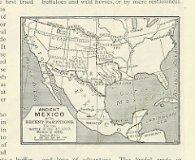

In the future, it might be useful for me to have a web page or narrative describing my teaching philosophy and practices. I like teaching because it gives me the opportunity to learn new things and put them into practice.
Here is a list of classes I have taught in the last five years:
I'm currently teaching a class that is using GIS tools to drive data-based decision making. (This is the latest set of buzzwords for what we've done all along - make decisions and choices based on evidence.) For this class, we're using four software packages: Tableau, Carto, ArcGIS, and QGIS.
Here is a quote from The ArcGIS Book, edited by Christian Harder and Clint Brown:
Storytellers often turn to maps to illuminate and contextualize their words. Maps are the visual representation of where events happen. As such, maps and stories complement each other.
There are many options for building maps and connecting them with data.
Here is a map from the British Library. This map comes from page 551 of Illustrated Battles of the Nineteenth Century, written by Major Arthur Griffiths Forbes and published in 1985.
This page was created by Denice Adkins for ISLT 7360. It was last updated on August 3, 2017.
You can get to Denice Adkins' Fancy Webpage here: http://www.deniceadkins.com.